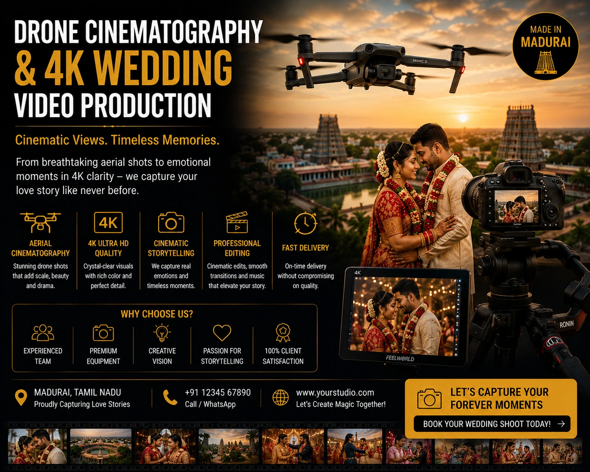
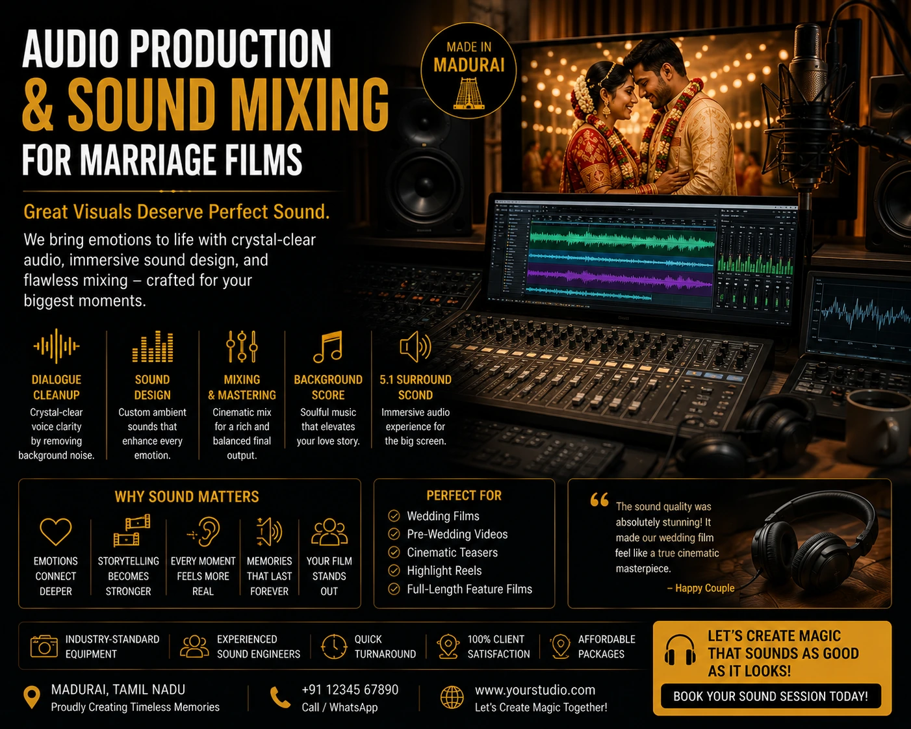

Why Mixed-Media Narratives and 4K Cinematic Wedding Videos are Dominating Modern Celebrations
The New Standard in Wedding Storytelling
Something has shifted in how Indian couples approach wedding documentation. The generation getting married in 2026 grew up with cinema-quality content on their phones — they have spent years watching prestige television, streaming platform films, and social media content produced at a standard that the wedding industry of a decade ago could not have imagined. And they are arriving at their own weddings with a correspondingly elevated expectation of what their wedding film should feel and look like.
Cinematic wedding videos — 4K resolution, professionally colour graded, narratively structured, scored with carefully selected music, and mixed with high-fidelity audio — are not a luxury tier reserved for the wealthiest weddings. They are rapidly becoming the expected standard for any couple who cares about how their wedding day is preserved. And multi-format wedding storytelling — the integration of drone cinematography, film-style photography, audio-driven teasers, and full-length narrative films into a single, coherent visual archive — is the approach that the most requested wedding teams across India are delivering.
This guide goes deep on what that standard actually looks like — the specific techniques, the production formats, the audio craft, and the visual approaches that define premium wedding storytelling in 2026.
What Makes a Wedding Film Cinematic
The word "cinematic" is used loosely in the wedding industry — applied to everything from a well-lit smartphone video to a genuine feature-film-quality production. For couples evaluating teams and understanding what they are paying for, here is what actually defines a cinematic wedding video at a technical and creative level:
Camera and Resolution
Genuine cinematic wedding films are shot on cinema-grade or high-end mirrorless cameras capable of 4K or higher resolution, with large sensors that produce the shallow depth of field and natural light handling that distinguishes cinematic footage from video-camera recordings.
Narrative Structure
A cinematic wedding film has a deliberate story arc — a beginning that establishes the emotional world of the day, a middle that builds through the ceremony's peak, and an ending that exhales into celebration. Structure is editorial craft; it does not happen automatically from assembled footage.
Colour Grading
Professional colour grading creates a consistent visual mood across every scene — warm and soft for getting-ready moments, dramatic for the ceremony, vibrant for the reception — that gives the film a unified aesthetic identity rather than the inconsistent look of ungraded footage.
Audio Design
The difference between a cinematic film and a recorded event is most clearly heard in the audio. Dedicated lapel microphones, ambient sound layering, professionally mixed music, and vow audio that is clear and present rather than distant and muddy define the audio standard of a premium film.

Drone-First Look Reveal Sequences: Aerial Cinematography at Its Most Emotional
Of all the cinematic techniques that have entered premium wedding filmmaking in recent years, the drone-first look reveal sequence is the one that most consistently produces the film's most-shared and most-rewatched moment. The technique is emotionally powerful because it combines two of the most charged elements of any wedding film — the scale of the setting and the intimacy of the first look — into a single, unbroken cinematic sequence.
How a drone-first look reveal sequence is executed at a professional level:
- Pre-shoot location scouting. The drone operator scouts the venue a minimum of one day before the wedding to identify the optimal flight path, confirm DGCA compliance for drone operation at the specific location, identify any obstacle or safety consideration, and plan the lighting conditions at the time of day the first look is scheduled.
- Choreography with the ground team. The drone sequence is coordinated with the ground-level videography and photography team so that the aerial angle, the ground-level angle, and the still photography angle are all capturing the moment simultaneously from complementary positions — not competing with each other.
- The reveal movement. The drone begins wide — establishing the venue, the landscape, the scale of the day — then moves slowly toward the couple as the groom turns to see the bride for the first time. The movement speed, altitude, and angle are planned specifically for the emotional beat: slow enough to build anticipation, close enough at the moment of reveal to capture the expression.
- Audio capture for the sequence. Ground-level lapel microphones on both partners capture the spoken reaction — the words exchanged in the first look moment — which are then mixed under the drone footage in the final film. The combination of aerial visual scale and intimate spoken audio is what makes the sequence cinematically complete.
35mm Film Style Wedding Photography: The Timeless Aesthetic
Parallel to the evolution of wedding videography, 35mm film style wedding photography has emerged as the most requested aesthetic among couples who have researched wedding photography extensively before booking. The reasons for its dominance are both aesthetic and psychological.
Aesthetically, 35mm film style wedding photography communicates warmth, softness, and timelessness through its characteristic colour rendering — the slightly desaturated midtones, the warm highlight rolloff, the gentle grain structure, the muted and organic colour palette that places a wedding photograph in a visual register closer to a personal memory than a commercial production. A film-style wedding photograph does not look like it was taken in 2026 — which is precisely its appeal. It looks like it was taken on the best day of the couple's life, and it will look that way in thirty years.
Psychologically, the film aesthetic triggers a set of associations — authenticity, intimacy, the value of the analog — that digital sharpness and saturation do not. For Indian couples who have grown up with an enormous volume of digital content and are beginning to associate digital sharpness with disposability, the film aesthetic communicates permanence. These are photographs worth printing and keeping.
The approach taken by the best photographers delivering 35mm film style wedding photography:
- Actual film shooting alongside digital. The most authentic film-style portfolios combine actual 35mm film cameras — typically medium format or 35mm point-and-shoot cameras for candid moments — with digital cameras for full coverage. The film frames are scanned and integrated into the final gallery alongside the digitals, producing a mixed-media image archive where the two formats complement each other.
- Film-emulation colour grading for digital images. For photographers shooting digital with a film-style grade, the colour grading is built on film emulation presets calibrated specifically for Indian skin tones, Tamil Nadu wedding lighting conditions, and the specific colour challenges of heavily embellished textiles — not generic Western film emulation presets that shift the colour balance in ways that misrepresent Indian bridal looks.
- Shooting style that supports the aesthetic. Film-style photography is shot with an approach that supports the aesthetic: slightly wider apertures for softer backgrounds, deliberate underexposure to protect highlights and create depth, and a preference for natural and available light over flash — because film grain and natural light are aesthetically complementary in a way that flash and film grain are not.
Audio-Driven Wedding Teasers: The Most Shareable Format
The audio-driven wedding teaser is the format that has most dramatically changed how wedding content performs on social media. A traditional wedding teaser is a 90-second to 2-minute visual highlights reel — a fast-cut montage of the best visual moments from the day, set to music. An audio-driven wedding teaser inverts this relationship: the audio — the vow, the celebrant's words, the couple's personal exchange, the crowd reaction — is the primary narrative element, and the visuals serve the audio rather than the audio serving the visuals.
Why audio-driven wedding teasers outperform traditional teasers on every social sharing metric:
- Emotional specificity. A beautifully shot montage of wedding moments is generic — every wedding has beautiful moments. A teaser built around the specific words of a specific couple's vows, or the specific sound of the crowd's reaction when the thali is tied, is irreplaceable — it is a record of something that happened once and will never happen exactly the same way again. This specificity is what makes viewers stop scrolling and watch to the end.
- Engagement through emotional honesty. The unscripted, unrehearsed spoken content of a wedding ceremony — the slightly broken voice, the unexpected pause, the laugh that breaks through the solemnity — communicates emotional authenticity that no amount of beautiful cinematography can manufacture. Viewers respond to it because they recognise it as real.
- Platform algorithm behaviour. On Instagram Reels and YouTube Shorts, content with a strong audio hook in the first three seconds — a distinctive voice, a surprising sound, a moment of clear emotional intensity — earns stronger algorithmic distribution than visual-hook-only content. The audio is read and weighted by the algorithm alongside the visual quality signals.

High-Fidelity Sound Mixing for Marriage Films: The Craft Nobody Talks About
High-fidelity sound mixing for marriage films is the most technically complex and most consistently undervalued element of premium wedding film production. It is also the element that most clearly separates a cinematic wedding film from a well-shot home video — because while visual quality differences between a professional and an amateur are visible, the audio quality difference is felt. Poor audio in a wedding film breaks immersion completely and makes even beautiful footage unwatchable.
The technical components of high-fidelity sound mixing for marriage films:
- Multi-track audio capture on the wedding day. A minimum of three audio sources: a lapel microphone on the officiant for clear ceremony audio, a lapel microphone on the groom (and where possible the bride) for vow and personal exchange audio, and at least one ambient microphone capturing the natural sound of the venue — the crowd murmur, the music, the environmental atmosphere that creates presence in the final film.
- Dialogue editing and noise reduction. Every spoken element in the film — vows, celebrant words, personal exchanges — is individually edited in post-production: breath noise reduced, background hum removed, room reverb treated, and the emotional peaks of the delivery preserved while the technical imperfections are addressed. This is a skilled audio editing discipline that takes as long as the video editing for a premium film.
- Music selection and synchronisation. The music track for a premium wedding film is not a generic romantic instrumental chosen from a stock library. It is selected specifically for the couple's musical personality, the emotional arc of the film's narrative structure, and the cultural context of the wedding. For Tamil Nadu weddings, this means understanding the specific emotional associations of Carnatic-influenced compositions versus contemporary Tamil film music versus international orchestral tracks — and selecting the music that serves the specific couple's story.
- Final mix and mastering. The final audio mix balances dialogue, ambient sound, and music across the full dynamic range of the film — dialogue clear and present, music emotionally supportive but not overriding speech, ambient sound present but not distracting. The final master is delivered at broadcast-standard levels compatible with every platform the film will be viewed on.
Premium Wedding Videography Packages: What to Confirm Before Booking
Premium wedding videography packages vary enormously in what they include — and the couples who are most disappointed with their wedding film are almost always the ones who booked based on a highlight reel and a price rather than a confirmed scope of deliverables. Here is the complete checklist of what every premium wedding videography package should specify in writing:
Coverage and Team
- Minimum two videographers for full-day simultaneous coverage
- Dedicated drone operator confirmed separately from ground team
- Specific named individuals confirmed for the wedding day
- Coverage hours confirmed with overtime rate specified
Audio Equipment
- Lapel microphones confirmed for officiant and couple
- Ambient microphone for venue atmosphere capture
- Backup audio recording confirmed for all critical moments
- Audio monitoring capability on the day to catch failures in real time
Deliverables
- Cinematic highlight film: 8 to 12 minutes with narrative arc
- Audio-driven teaser: 90 seconds to 2 minutes for social sharing
- Full-length ceremony edit: uncut record of all rituals and vows
- Delivery format: 4K downloadable files and private streaming links
Top Wedding Videographers Near Me: What Separates the Best
For couples searching for top wedding videographers near me, the evaluation criteria for a premium cinematic team go beyond a beautiful showreel. Here is what actually separates the best from the rest:
- Watch a full film, not a teaser. A 2-minute showreel tells you almost nothing about a videographer's narrative craft, audio quality, or consistency across a full wedding day. Watch a complete highlight film — 8 to 12 minutes — and evaluate the story structure, the audio clarity, the colour consistency, and the pacing from the first frame to the final cut.
- Listen before you watch. Mute the film. Now play it with sound only. The audio quality of the vows, the ambient sound, the music mix — these are the elements that reveal the team's technical standard most clearly, because audio quality cannot be hidden behind beautiful visuals.
- Ask about their audio capture setup. The number of microphones used, the equipment brands, the backup systems in place, and how they handle audio failure scenarios. A team that cannot answer these questions specifically is a team that does not treat audio as a priority.
- Confirm drone certification and compliance. Drone operation at a wedding requires DGCA registration and, depending on the venue location and classification, specific permits. A team offering drone footage should be able to confirm their certification and explain their permit process for your specific venue.
- Review their post-production timeline. Premium cinematic wedding films require significant post-production investment — audio editing, colour grading, narrative assembly, music licensing, and final mastering. A realistic delivery timeline for a premium film is 8 to 12 weeks. Teams promising two-week delivery are compressing the post-production to a level that cannot produce a premium result.
Multi-Format Wedding Storytelling: The Complete Archive
The couples investing most thoughtfully in their wedding documentation in 2026 are not choosing between photography and videography — they are commissioning multi-format wedding storytelling that integrates every medium into a coherent visual archive. Still photography captures the single perfect frame. The cinematic film captures the movement, sound, and atmosphere around it. The 35mm film style wedding photography adds an analog warmth and timelessness to the digital still library. The drone sequences give scale to the intimate moments. The audio-driven wedding teaser gives the day a shareable social media identity.
Together, these formats do not compete — they compound. Each one preserves a dimension of the wedding day that the others cannot. And the total archive they produce together is something that grows in value with every year that passes — because it preserves not just what the day looked like, but what it sounded like, what it felt like, and what it meant.
Conclusion
Cinematic wedding videos, drone-first look reveal sequences, 35mm film style wedding photography, audio-driven wedding teasers, and high-fidelity sound mixing for marriage films are not separate luxury add-ons for the highest-budget weddings. They are the components of a multi-format wedding storytelling approach that is becoming the expected standard for couples who understand what is possible — and who want their wedding day preserved in a way that will feel as emotionally true thirty years from now as it does the morning after.
When searching for top wedding videographers near me, watch the full films. Listen to the audio. Confirm the deliverables in writing. And choose a team whose work — in every format and every technical dimension — makes you feel something before you have even met them.
At The PhD Ads, we produce cinematic wedding videos, premium wedding videography packages, and multi-format wedding storytelling for couples across Madurai and Tamil Nadu — 4K cinematography, drone sequences, film-style photography integration, audio-driven wedding teasers, and high-fidelity sound mixing for marriage films, all delivered as a single, coherent visual archive of your wedding day.
Key Topics
Ready to Commission Your Cinematic Wedding Film?
At The PhD Ads, we specialise in premium cinematic wedding videography — 4K wedding films, drone cinematography, audio-driven teasers, and high-fidelity sound mixing for couples across Madurai and Tamil Nadu who want their wedding day preserved as a film worth watching for the rest of their lives.
Email: team@e2o.in